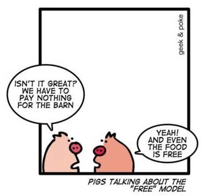
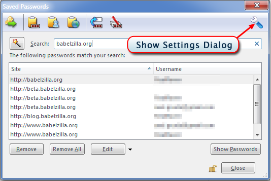
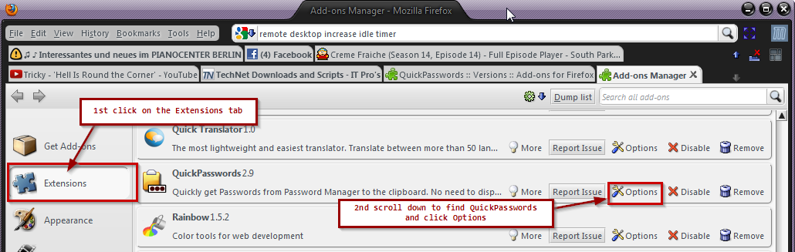
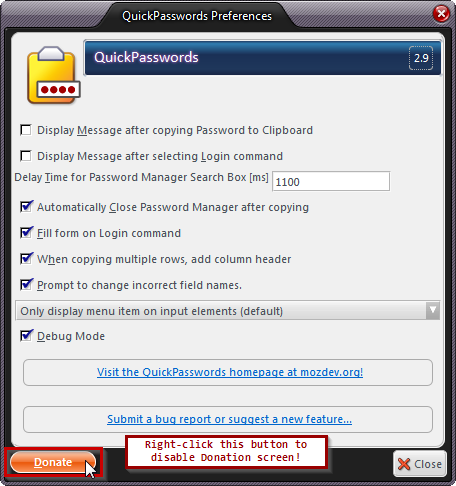
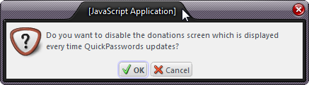
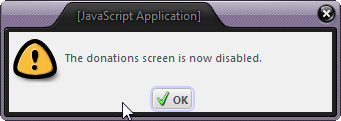

Please support Free Software.
I am working hard to improve and keep QuickPasswords compatible with your browsers!
"If you've found QuickPasswords to improve your online life,
please consider donating. We can absolutely use your support.
My wife had to give up her nursing job because of arthritis and it is not easy on
the cash flow. This is probably going to be our most frugal Christmas since
moving to Ireland. If you can spare the price of a coffee I would be very
grateful indeed!
Thanks again in advance. ..."


As users, we like to use the software the way we want, and we more or less expect it to be free of charge. The question is what
do the commercial software vendors make of this? Since the advent of facebook is a shift of users (and their data) from being the customers
becoming the merchandise, and the corporations becoming the customer. This is because even the best community sites cannot operate without
profit. The web is already overfraught with advertisement and data mining - The alternative is truly Free software that is
funded by donations.
I don't want to fund QuickPasswords through pushing advertisements on the users. Also IMO the user's data is something that belongs to only them; it is not a
commodity for companies to trade and play with.
|
Don't like paypal?
|
I love QuickPasswords - it makes working with passwords a breeze! Yes! It makes me more productive
so I want to buy you a coffee! Any Questions?
If you actually have donated already or only like freebies (yes, there is them...) please recommend QuickPasswords to your firends and colleagues!
Want to disable this screen?
|
Do you suggest any amount?
US$ donations: we suggest 10$ as that seems to be be a what most people like to donate - but of course smaller and greater amounts are always welcome.
Euro donations: 5 Euros would be nice and 10 Euros or more considered generous!
Your tip is important to make QuickPasswords even more excellent! If you can'ty afford it right now, consider it at the next update - in the meantime, recommend to friends and colleagues.
You can also add some feature requests here: Bugs + Features.
But I don't like / never use Paypal!
Just send me an email, and I give you my address for a cheque or note.
What does it mean then, free software ??
Free as in Free Speech, not Free Beer.
The reason I am putting a lot of work into QuickPasswords is because I am using it every day, in order to make my daily work
easier. I think it also important to share any tool that makes working easier and allow improvement of the tools.
I think the most important aspect on free software is that it is a political statement to avoid the pitfalls of
proprietary, monopoly driven software that coined terms such as "Embrace, Extend and Extinguish" and the innovation crippling
model of patenting software (for further reading, please see links below).
At the moment there is a conflict raging between the old proprietary model of software and the Free Software Concept,
and its you, the users who will really decide where the future will take us. By downloading the Mozilla products and extensions by
independant software developers, like QuickPasswords, you are actively helping the cause.
there is an excellent description of this concept here:
Quote: “Free software” is a matter of liberty, not price. To understand the concept, you should think of “free” as in “free speech,” not as in “free beer.”
Free software is a matter of the users' freedom to run, copy, distribute, study, change and improve the software.
It is also important to note that you can always modify QuickPasswords as it is open source and send me improvement suggestions.
Or you can use features in the existing software and use them in your own extension, provided you stick to the license
(you can not create commercial versions of the extension and you need to attribute / credit the original authors).
I have tried to make the code as readable as possible, so that you can check how QuickPasswords achieves its various goals.
What's happening right now?
The American congress now tries to introduce censorship of the internet. Click here for more information.
The web is changing very massively over the last 2 years. This requires rethinking on how we use this community resource.
Community Sites are gaining a big amount of the power and the market share, the "login with facebook" idea
is now trying to lock our identities into their systems; building huge silos that lock in our data in order to keep users "within" their systems;
and while the web is still an open place and there are lots of "login with facebook" buttons, yet it has become increasingly difficult
to move our own data, determine when and where it is used and stored. This is because in this new model, the users become the
merchandise and the corporations become the customers. It is because in a "free" world this seems to be the only way to
generate some revenue, and believe me that community sites such as facebook are _not_ there to server the users. Like anything else
they are there to make money. The question is whether financing by loosing the ownership of one's own data and getting channeled into
advertisment slots, is really the way we want to go?
We are not the product! We are the community!
Mozilla is currently working on a new conecept called BrowserId, which aims to allow users to bring their data with them,
makes sure the data is encrypted on the server so it cannot be abused or mined without the user's consent. It also should make
it easier for the user to move the data across to a different community provider or remove it altogether. This is clearly not
in the interest of the community sites themselves if they base their business model around being "the only one", but it is another
necessary step for the webn to grow up, and for us users to emancipate ourselves from the providers.
I think that the donation model as such works, although I wish more people of the daily users (currently about 3,100) would take the
time to donate some money. There is only a minute fraction who actually click the donation link. So, if you've found QuickPasswords to improve your work or business productivity,
please take a moment. I _really_ appreciate the support. Thanks again in advance.
One thing that I think is a bad idea is to try to use advertisement or constant "nagging" at the users in order to earn some money. The only time you will hear from me
is when I release a new version, usually with new usability features and bug fixes.
I am actively refusing extensions that try to do things like add advertisements, change browser links (by adding referrers) or redirect users in order to achieve
this, there is a very fruitful discussion on the AMO Editors team who constantly review issues that the users bring to our attention
around this topic.
However, I also acknowledge that it is an inconvenience and a bit of a leap of faith to make a donation,
so I would like to sincerely thank you for reading this and considering.
thanks for reading
yours sincerely, Axel Grude
Further Reading
If you want to permanently disable this screen which comes up after QuickPasswords is updated, please follow the instructions below:
Open QuickPasswords Options. The quickest way to do this is via the Settings button on top of the Password Manager toolbar:

Of course you can also go the usual route via Tools > Addons > Extensions > QuickPasswords and clicking the Options button:

On the options screen, right-click the Donate button:

The following message will be displayed, please click Ok.

Finally, a confirmation message is displayed:

Please note that you can reverse this by right-clicking the Donate button again.